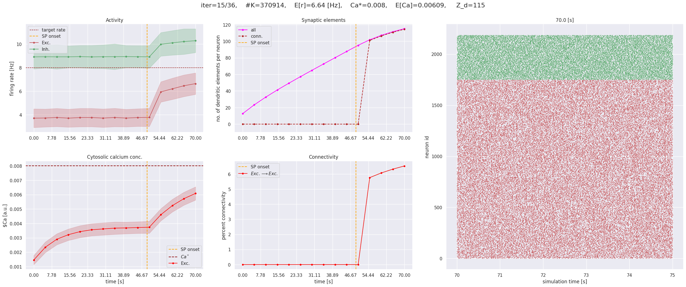
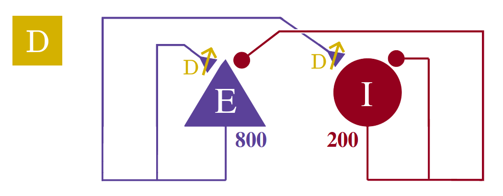

An on-site tutorial at the 32nd Annual Computational
Neuroscience Meeting (CNS*2023)
July 15-19th, 2023
Description
 NEST
is an established, open-source simulator for spiking neuronal networks,
which can capture a high degree of detail of biological network
structures while retaining high performance and scalability from laptops
to HPC [1]. This tutorial offers a hands-on experience in building and
simulating neuron, synapse, and network models. It introduces several
tools and front-ends to implement modeling ideas most effectively.
Participants do not have to install software as all tools are accessible
via the cloud.
NEST
is an established, open-source simulator for spiking neuronal networks,
which can capture a high degree of detail of biological network
structures while retaining high performance and scalability from laptops
to HPC [1]. This tutorial offers a hands-on experience in building and
simulating neuron, synapse, and network models. It introduces several
tools and front-ends to implement modeling ideas most effectively.
Participants do not have to install software as all tools are accessible
via the cloud.
 First,
we look at NEST Desktop [2], a web-based graphical user interface (GUI),
which allows the exploration of essential concepts in computational
neuroscience without the need to learn a programming language. This
advances both the quality and speed of teaching in computational
neuroscience. To get acquainted with the GUI, we will create and analyze
a balanced two-population network.
First,
we look at NEST Desktop [2], a web-based graphical user interface (GUI),
which allows the exploration of essential concepts in computational
neuroscience without the need to learn a programming language. This
advances both the quality and speed of teaching in computational
neuroscience. To get acquainted with the GUI, we will create and analyze
a balanced two-population network.
The tutorial will then turn to Jupyter (Python) notebooks where we will start by creating a spiking network based on the rodent visual system. This will enable us to study the emergence of orientation tuning of V1 neurons in the feedforward thalamocortical pathway, through a nonlinear input-output transformation. Next, we will observe how homeostatic structural plasticity regulates the activity of individual neurons in a network and leads to activity- dependent self-organization [3].
To demonstrate the ease and flexibility of using NESTML to create custom neuron and synapse models for NEST Simulator, a functional plasticity rule will then be introduced into the balanced E/I network to implement a biologically realistic version of reinforcement learning. This will be done by formulating the learning model in the NESTML language syntax, and using the associated toolchain to generate code for NEST [4]. In the custom plasticity rule, spike-timing dependent plasticity will interact with a global dopamine concentration, using the scalable volume transmitter concept from NEST [5].
Citations
[1] https://nest-simulator.readthedocs.org/
[2] https://nest-desktop.readthedocs.org/
[3] Diaz-Pier S, Naveau M, Butz-Ostendorf M, Morrison A (2016). Automatic Generation of Connectivity for Large-Scale Neuronal Network Models through Structural Plasticity. Frontiers in Neuroanatomy, Vol. 10. https://doi.org/10.3389/fnana.2016.00057
[4] https://nestml.readthedocs.org/
[5] Potjans W, Morrison A, Diesmann M (2010). Enabling functional neural circuit simulations with distributed computing of neuromodulated plasticity. Frontiers in Computational Neuroscience, 4:141. DOI: https://doi.org/10.3389/fncom.2010.00141
Schedule (on-site tutorial)
The tutorial will start on Saturday, July 15th, 09:00.
| Time | Description |
|---|---|
|
Overview and introduction to NEST Simulator Charl Linssen |
|
|
Hands-on with NEST Desktop Jens Bruchertseifer, Sebastian Spreizer |
|
| Coffee break | |
|
Emergence of V1 orientation tuning Wenqing Wei |
|
| Lunch break | |
|
Homeostatic structural plasticity Aadhar Sharma |
|
| Coffee break | |
|
Modeling dopamine-modulated STDP synapses with NESTML Pooja Babu, Charl Linssen |
|
| Closing |
Materials
Course materials (presentations and notebooks) are available in our repository.
For presentations:
https://github.com/clinssen/OCNS-2023-NEST-workshop/tree/master/presentations
For the tutorial notebooks:
https://github.com/clinssen/OCNS-2023-NEST-workshop/tree/master/materials
Links
NEST Simulator is a spiking neuron simulator which specialises in point neurons and neurons with few comparments. It can simulate synaptic plasticity, structural plasticity, gap junctions and countless other features on machines ranging from home PCs to high-performance computing systems.
NEST Desktop is a web-based GUI application for NEST Simulator. It enables the rapid construction, parametrization, and instrumentation of neuronal network models.
NESTML is a domain-specific modeling language and code-generation toolchain. It supports the specification of neuron models in an intuitive and concise syntax. Optimised code generation for the target simulation platform couples a highly accessible language with good simulation performance.
Registration
Please don’t forget to register for the on-site meeting in Leipzig. Registration is required.
Tutorials are not recorded and are not livestreamed events on YouTube. Please note that this is an on-site event only.
Software requirements
We will provide login details for virtual machines on Human Brain Project (EBRAINS) infrastructure to registered participants. You will be able to access the required software directly from your browser, without requiring any installation. Access is provided to a NEST Desktop instance, as well as a JupyterLab environment that includes NEST Simulator and NESTML.
You can also run the software on a local computer. We suggest using two Docker images that we provide:
JupyterLab server with NEST and NESTML support
Launches a Jupyter Notebook server on localhost at port 7003. The password is: nest25years
The image is available via DockerHub. To install:
docker pull clifzju/nest-nestml-jupyterlab-ocns-tutorialThen run the image while forwarding the port:
docker run -i -d -p 7003:7003 -t clifzju/nest-nestml-jupyterlab-ocns-tutorialYou can then access the server in your browser by navigating to the URL http://localhost:7003.
The Docker container can be started in interactive mode (giving you a shell prompt) by omitting the
-dparameter.-
For local installation, we recommend to use the official NEST Desktop Docker image and instructions. Full instructions can be found at: https://nest-desktop.readthedocs.io/en/latest/deployer/deploy-docker-compose.html.
Feedback
If you participated in (any part) of this tutorial, we value your feedback! Please take a moment to fill in our short feedback form at https://forms.gle/yv9MwmAKJugTs2mR9.
Organisation
This tutorial is organised by (in alphabetical order): Aadhar Sharma (Bernstein Center, Freiburg, University of Freiburg, Germany), Charl Linssen (Jülich Research Centre, Germany), Jens Bruchertseifer (Trier University, Germany), Pooja Babu (Jülich Research Centre, Germany), Sebastian Spreizer (Trier University, Germany) and Wenqing Wei (Bernstein Center Freiburg, University of Freiburg, Germany).
For general inquiries, please contact Charl at c.linssen@fz-juelich.de.
Acknowledgements
We acknowledge the use of Fenix Infrastructure resources, which are partially funded from the European Union’s Horizon 2020 research and innovation programme through the ICEI project under the grant agreement No. 800858.